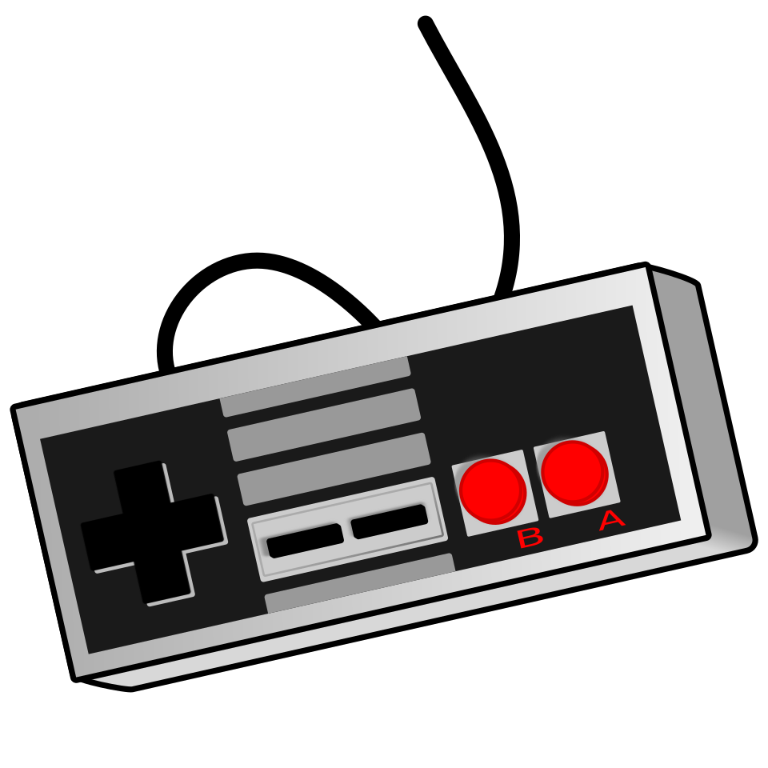

Hi! This is my first post… well, here goes! I decided to set up a personal blog again for the first time in years. Lately, I’ve been diving deep into FOSS (Free and Open Source Software) applications ever since I switched to Linux.
I finally made the switch, and honestly, it wasn’t as painful as I expected. Even better, I haven’t had to go back to Windows for any apps — which was my biggest worry. I’ve been trying out a bunch of open-source applications and keeping the ones that really work for me. My goal is to free myself from big tech wherever I can and preserve my sanity. Aside from that, I love retro tech, video games, and all things music — so expect some of that here too!.
